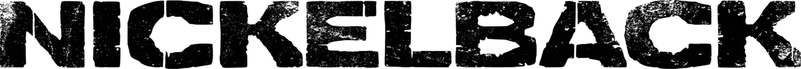

Nickelback é composto atualmente pelo vocalista e guitarrista Chad Kroeger, pelo guitarrista, tecladista e backing vocal Ryan Peake, o baixista Mike Kroeger e o baterista Daniel Adair. A banda passou por diversas alterações em sua formação entre mil novecentose noventa e cinco e dois mil e cinco, atingindo sua formação atual quando Daniel Adair substituiu o baterista Ryan Vikedal.
Nickelback é um dos mais bem sucedidos grupos canadense e já vendeu mais de cinquenta milhões de álbuns ao redor do mundo, além de ser a segunda banda estrangeira que mais vendeu nos Estados Unidos nos anos dois mil, atrás somente para The Beatles
A Billboard elegeu Nickelback como o melhor grupo de rock da década e a música “How You Remind Me” como o melhor single de rock e quarto melhor single da década. Eles ficaram com o sétimo lugar na Billboard top artist of the decade (Melhor artista da década), com quatro álbuns entre os melhores. Atualmente grupo assinou contrato com a Republic Records que é a sua atual gravadora.
Chad Robert Turton-Kroeger nasceu a quinze de novembro de mil novecentos e setenta e quatro, em Hanna, Alberta, Canada e é vocalista e guitarrista da banda canadense Nickelback. Teve a sua carreira iniciada durante a adolescência quando aos treze anos começou a aprender a tocar guitarra sozinho, mais tarde criou uma banda, a Village Idiots, onde tocavam covers. Em mil novencentos e noventa e cinco cria os Nickelback com o seu irmão Mike, um amigo Ryan Peake e o primo Brandon Kroeger.
No dia vinte e um de Agosto de dois mil e doze, revelou um noivado até então secreto com a cantora canadense Avril Lavigne, a qual o ajudou compondo algumas músicas em estúdio. Chad se casou com Avril no dia um de Julho de dois mil e treze em França, no castelo medieval Chateau de la Napoule, no sul do país. A festa durou três dias, de acordo com o site PopSugar. “Quando você olha para essa aliança em seu dedo, olha para o outro todos os dias e chama aquela pessoa de marido ou mulher, é um sentimento muito especial”, confessou o vocalista do Nickelback.
Sua banda Nickelback já vendeu mais de sesenta milhões de discos por todo mundo, uma das bandas mais bem sucedidas do rock. Chad é dotado de uma voz escura e poderosa.
Ryan Anthony Peake, nasceu a um de março de mil novecentos setenta e três, em Brooks, Alberta, Canada e é um músico, cantor e compositor canadiano, mais conhecido como guitarrista rítmico, teclista e vocalista de apoio da banda de rock canadiana Nickelback. Faz parte da banda desde o seu início e é mais conhecido pelas suas vozes proeminentes nas canções dos Nickelback "Savin' Me", "Hollywood" e "Gotta Be Somebody"
Peake "cresceu com o metal sólido", referindo bandas como Anthrax, Megadeth e Metallica como as suas primeiras favoritas. Posteriormente, interessou-se pelo grupo canadiano de country rock Blue Rodeo, referindo que a sua música "me fez realmente pensar no que se encaixa".
Juntamente com os irmãos Chad e Mike Kroeger, Peake co-fundou a Village Idiot, uma banda de covers cuja lista de reprodução consistia principalmente em canções dos Metallica. A banda tocava principalmente em bares da cidade natal de Peake e dos Kroegers, Hanna, Alberta, Canadá. Mais tarde, o grupo reformulou-se como Nickelback e Peake foi responsável pelo financiamento inicial da banda, pedindo emprestado trinta mil dólares a um banco local através de uma linha de crédito.
Michael Kroeger nasceu a vinte e cinco de Junho de mil novecentos e setenta e dois, em Canada, e é o baixista da banda canadiana Nickelback. Ele é o meio-irmão mais velho do vocalista da banda, Chad Kroeger, e Michael é responsável pelo desenvolvimento do nome da banda, NickelBack.
Ele também é um ator e compositor, conhecido por Book of Shadows: Blair Witch dois, Transformers: A Vingança dos Caídos e Os Condenados.
Daniel Patrick Adair nasceu a dezanove de fevereiro de mil novecentos e setenta e cinco, em Vancouver e é um baterista canadiano. É mais conhecido pelo seu trabalho com os Nickelback e pelo seu trabalho anterior com os Three Doors Down. Também trabalha com a banda canadiana Suspect e com a banda de fusão instrumental Martone.